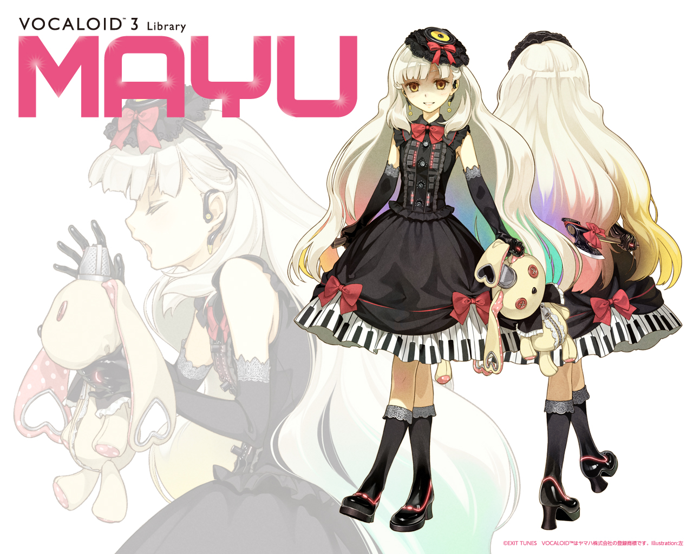
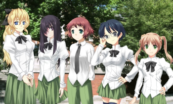

Je ne prend quasiment jamais de photo de moi-même, aussi trouverez-vous dans cette galerie quelques photos illustrant certains de mes centres d'intérêts.
La Vocaloid Mayu.
Hatsune Miku, la plus célèbre des Vocaloids.
Le Tiger I, mon véhicule de combat favori.

League of Legends, un jeu que j'aime beaucoup.

Les protagonistes de Katawa Shoujo, mon jeu favori.
De gauche à droite: Lily, Hanako, Rin, Shizune et Emi.
Les images appartiennent à leurs créateurs respectifs, je ne fais que les réutiliser à des fins informatives.